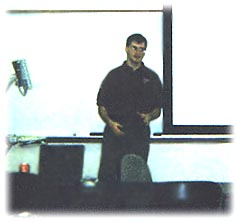

|
 |
 |
|
 |
 |
03/22/2000
Our March 22nd meeting brought Kevin Grossnicklaus, Senior Development
Consultant from SSE inc. to talk about COM/COM+ and Visual Basic.
Kevin discussed how COM/COM+ ( Component Object Model )is used in n-tier Web
Development, and how it is different than traditional Web Development. Kevin,
being an expert Visual Basic programmer, showed us throughout his presentation,
how to implement COM/COM+ through the use of Visual Basic. Kevin said, "Almost
everything in VB 5 and 6 is based on COM. VB is also a very simple tool to
rapidly create your own COM objects without much knowledge of the underlying COM
infrastructure."
One of the great things that Kevin showed us was some actual VB code cal ling
COM objects.

Here is a copy of Kevin's PowerPoint
Presentation
Some links that Kevin mentioned, dealing with Visual Basic:
MSDN library
www.devx.com
VB Chat
|
 |
 |